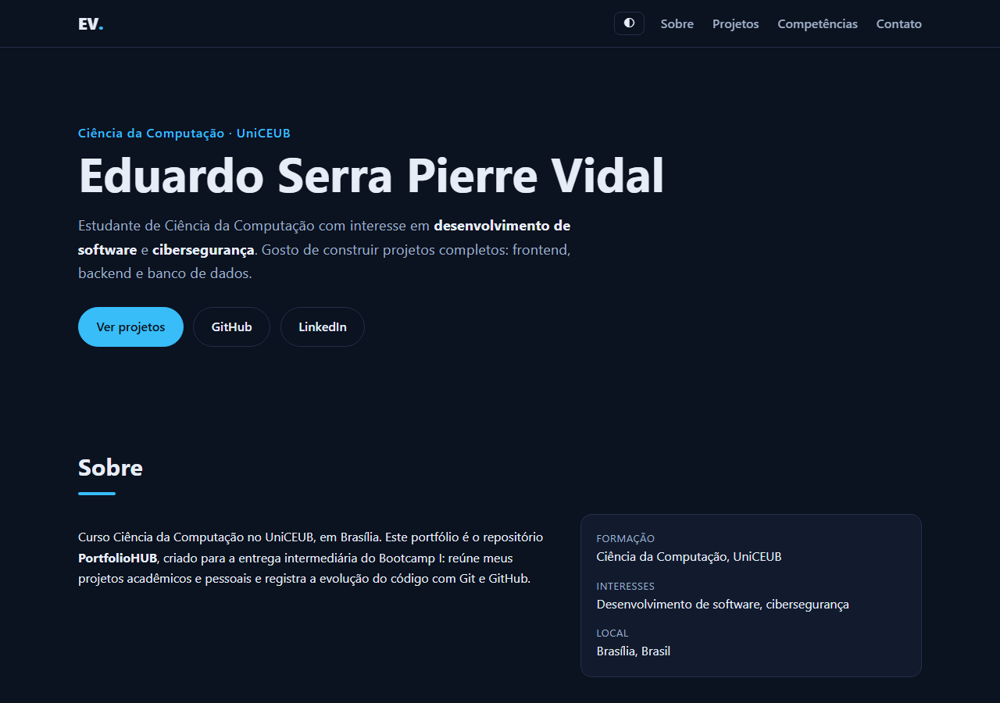
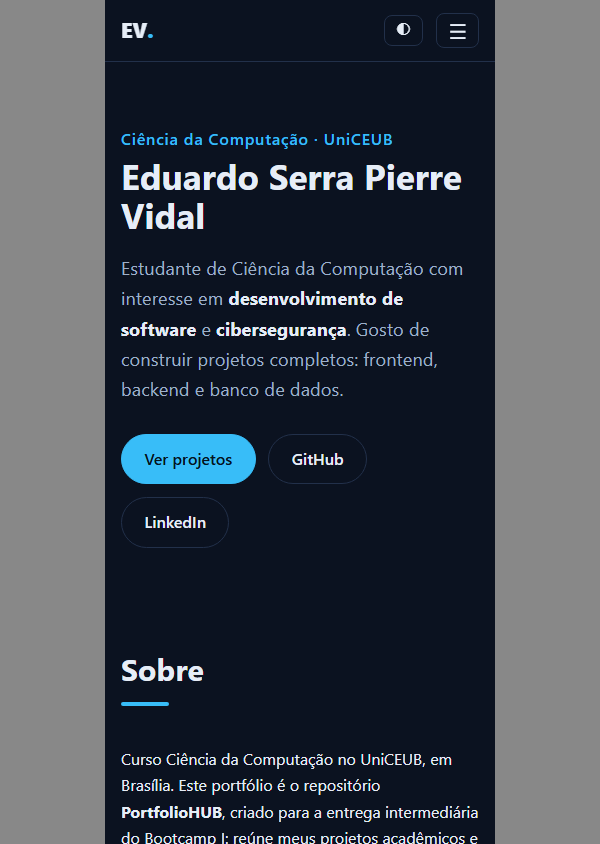

UniCEUB · Ciência da Computação
Bootcamp I
Eduardo Serra Pierre Vidal
Curso: Ciência da Computação
16 de outubro de 2026
Esta atividade pede a criação de um repositório no GitHub que reúna projetos acadêmicos e pessoais e demonstre planejamento, organização de diretórios, uso de Git com uma versão 1.0 e alterações posteriores, documentação em README, publicação no GitHub Pages e integração com o LinkedIn. O resultado é o repositório PortfolioHUB e seu site.
Foram analisados os 13 repositórios públicos de github.com/eduspv, e selecionados os que têm autoria e descrição verificáveis. Dois repositórios (pocket-planner-*) ficaram de fora por falta de clareza sobre a autoria.
| Diretório | Função e justificativa |
|---|---|
index.html, css/, js/ | Site em HTML, CSS e JS puros: publica direto no GitHub Pages, sem build. |
projetos-academicos/, projetos-pessoais/ | Documentação de cada projeto, com links para os repositórios originais (sem copiar código). |
documentacao/ | Planejamento, versionamento e integração com o LinkedIn. |
entrega/ | Roteiro da apresentação e este documento. |
assets/images/ | Capturas de tela reais do site publicado. |
Tecnologias: HTML5, CSS3, JavaScript (sem dependências), Git e GitHub, GitHub Pages. O site tem as seções Sobre, Projetos, Competências e Contato, layout responsivo, menu acessível (link de salto, foco visível, aria-*), animações leves que respeitam prefers-reduced-motion, filtro de projetos por tecnologia e tema claro/escuro.
| Tipo | Projeto | Tecnologias |
|---|---|---|
| Acadêmico | Study Hub | Markdown, Git |
| Acadêmico | Exercícios de HTML, CSS e JS | HTML, CSS, JavaScript |
| Pessoal | SASBIO — Plataforma de Saúde Mental | Go, Gin, PostgreSQL, React, TypeScript |
| Pessoal | Chatbot WhatsApp | Python, Flask, Twilio |
| Pessoal | Instagram Cleaner Bot | Python, Selenium |
| Pessoal | Portfólio Tech Showcase (demo) | React, TypeScript, Vite |
| Pessoal | Site Anisio David | React, TypeScript, Tailwind |
| Pessoal | Site Ricardo Marques | HTML, CSS, JavaScript |
Versionamento é o registro organizado das mudanças do código, com autor, data e mensagem. O repositório foi iniciado com git init, recebeu um commit inicial e a tag anotada v1.0.0; as melhorias seguintes entraram em commits separados no padrão Conventional Commits, e a tag v1.1.0 marca o resultado.
Histórico real (saída de git log):
| Commit | Data | Mensagem | Tag |
|---|---|---|---|
8c8c766 | 2026-10-16 | feat: estrutura inicial do PortfolioHUB e site v1.0 | v1.0.0 |
0722c81 | 2026-10-16 | feat: filtro de projetos por tecnologia | |
beaa7a2 | 2026-10-16 | feat: alternância de tema claro e escuro | |
32ade2e | 2026-10-16 | docs: registra histórico de versões e a v1.1.0 | v1.1.0 |
Commits: github.com/eduspv/PortfolioHUB/commits/main · Tags: github.com/eduspv/PortfolioHUB/tags. A existência das duas tags no remoto foi conferida com git ls-remote --tags origin.
O site está publicado a partir da branch main (raiz) em https://eduspv.github.io/PortfolioHUB/. Foram testados: resposta HTTP 200 da página, do CSS e do JS, e dos links externos dos projetos. As capturas abaixo foram geradas a partir do site publicado.


documentacao/integracao-linkedin.md, mas o projeto ainda não foi adicionado ao perfil. Após a inclusão, inserir aqui uma captura de tela da seção Projetos.Perfil: linkedin.com/in/eduardo-s-p-vidal
entrega/roteiro-apresentacao.md. O vídeo ainda não foi gravado nem publicado no YouTube. Link do vídeo: a preencher.A atividade mostrou na prática como o Git organiza a evolução de um projeto: commits pequenos e descritivos tornam o histórico legível, as tags marcam versões e o GitHub, junto com o GitHub Pages, transforma o repositório em uma vitrine pública. Para a carreira em desenvolvimento, um repositório bem documentado e com histórico real é uma evidência concreta de organização e de prática profissional.
| Item | Link |
|---|---|
| Repositório | https://github.com/eduspv/PortfolioHUB |
| Site (GitHub Pages) | https://eduspv.github.io/PortfolioHUB/ |
| GitHub | https://github.com/eduspv |
| https://www.linkedin.com/in/eduardo-s-p-vidal/ | |
| Vídeo no YouTube | pendente |